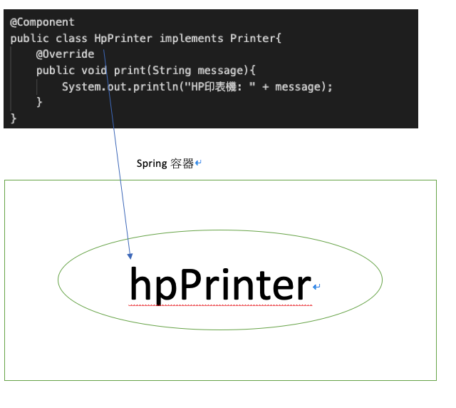

<!DOCTYPE html>
<html lang="zh-tw"><head>
  <meta charset="utf-8">
  <title>JimChien</title>

  <!-- mobile responsive meta -->
  <meta name="viewport" content="width=device-width, initial-scale=1, maximum-scale=1">
  <meta name="description" content="Spring IoC 介紹及應用">
  <meta name="author" content="Jim Chien">
  <meta name="generator" content="Hugo 0.84.0" />

  <!-- plugins -->
  
  <link rel="stylesheet" href="https://jimchien666.github.io/plugins/bootstrap/bootstrap.min.css ">
  
  <link rel="stylesheet" href="https://jimchien666.github.io/plugins/slick/slick.css ">
  
  <link rel="stylesheet" href="https://jimchien666.github.io/plugins/themify-icons/themify-icons.css ">
  
  <link rel="stylesheet" href="https://jimchien666.github.io/plugins/venobox/venobox.css ">
  

  <!-- Main Stylesheet -->
  
  <link rel="stylesheet" href="https://jimchien666.github.io/scss/style.min.css" media="screen">

  <!--Favicon-->
  <link rel="shortcut icon" href="https://jimchien666.github.io/images/favicon.png " type="image/x-icon">
  <link rel="icon" href="https://jimchien666.github.io/images/favicon.png " type="image/x-icon">

  <!-- google analitycs -->
  <script>
    (function (i, s, o, g, r, a, m) {
      i['GoogleAnalyticsObject'] = r;
      i[r] = i[r] || function () {
        (i[r].q = i[r].q || []).push(arguments)
      }, i[r].l = 1 * new Date();
      a = s.createElement(o),
        m = s.getElementsByTagName(o)[0];
      a.async = 1;
      a.src = g;
      m.parentNode.insertBefore(a, m)
    })(window, document, 'script', '//www.google-analytics.com/analytics.js', 'ga');
    ga('create', 'UA-199893303-1', 'auto');
    ga('send', 'pageview');
  </script>

</head><body>
<!-- preloader start -->
<div class="preloader">
  
</div>
<!-- preloader end -->
<!-- navigation -->
<header class="navigation topBar">
  <div class="container">
    
    <nav class="navbar navbar-expand-lg navbar-white bg-transparent border-bottom pl-0">
      <a class="navbar-brand mobile-view" href="https://jimchien666.github.io"></a>
      <button class="navbar-toggler border-0" type="button" data-toggle="collapse" data-target="#navigation">
        <i class="ti-menu h3"></i>
      </button>

      <div class="collapse navbar-collapse text-center" id="navigation">
        <div class="desktop-view">
          <a class="navbar-brand mx-auto desktop-view" href="https://jimchien666.github.io"><span class="text-body">Jim's Blog</span></a>
        </div>

        <a class="navbar-brand mx-auto desktop-view" href="https://jimchien666.github.io"></a>

        <ul class="navbar-nav">
          
          
          <li class="nav-item">
            <a class="nav-link" href="https://jimchien666.github.io/about">About Me</a>
          </li>
          
          
          
          <li class="nav-item">
            <a class="nav-link" href="https://jimchien666.github.io/blog">Blog</a>
          </li>
          
          
        </ul>

        
        <!-- search -->
        <div class="search pl-lg-4">
          <button id="searchOpen" class="search-btn"><i class="ti-search"></i></button>
          <div class="search-wrapper">
            <form action="https://jimchien666.github.io/search" class="h-100">
              <input class="search-box px-4" id="search-query" name="s" type="search" placeholder="Type & Hit Enter...">
            </form>
            <button id="searchClose" class="search-close"><i class="ti-close text-dark"></i></button>
          </div>
        </div>
        

        
      </div>
    </nav>
  </div>
</header>
<!-- /navigation -->

<section class="section-sm">
  <div class="container">
    <div class="row">
      <div class="col-lg-10 mx-auto">
        
        <a href="/categories/springboot%e8%aa%b2%e7%a8%8b%e7%ad%86%e8%a8%98"
          class="text-primary">Spring boot課程筆記</a>
        
        <h2>SpringBoot課程筆記（一） Spring IoC</h2>
        <div class="mb-3 post-meta">
          <span>By Jim Chien</span>
          
          <span class="border-bottom border-primary px-2 mx-1"></span>
          <span>2019-10-29</span>
          
        </div>
        
        <div class="content mb-5">
          <hr>
<h4 id="ioc--inversion-of-control-控制反轉">IoC = Inversion of Control (控制反轉)</h4>
<p>什麼是IoC呢？我們以印表機來舉個例子。</p>
<p>假設這世界上只有Hp品牌的印表機，而學校的老師和同學們都需要一台印表機，這時我們會這麼寫</p>
<pre><code>public interface Printer {
    void print(String message);
}

public class HpPrinter implements Printer{
    @Override
    public void print(String message){
        System.out.println(&quot;HP印表機: &quot; + message);
    }
}

public class Teacher {
    private Printer printer = new HpPrinter();
    public void teach(){
        printer.print(&quot;I'm a teacher&quot;);
    }
}

public class Student {
    private Printer printer = new HpPrinter();
    public void learn(){
        printer.print(&quot;I'm a student&quot;);
    }
}
</code></pre><p>這時老師跟學生都有一台印表機，且都能將自己的身份印出</p>
<p>但這時，新的印表機品牌出現了</p>
<pre><code>public class CanonPrinter implements Printer{
    @Override
    public void print(String message){
        System.out.println(&quot;Canon印表機: &quot; + message);
    }
}
</code></pre><p>這時候，如果老師跟學生都要統一換成新品牌時，我們必須改兩個地方，會造成一個困擾，假設我用10次，就要改10次，非常麻煩</p>
<p>而學生跟老師只是需要一台印表機，並不在乎品牌．</p>
<p>這時候呢spring出現了，他幫我們保管了印表機這個Object，而當有人需要使用印表機時，Spring就會提供他使用</p>
<p>程式就變這樣</p>
<pre><code>public class Teacher {
    private Printer;
    public void teach(){
        printer.print(&quot;I'm a teacher&quot;);
    }
}

public class Student {
    private Printer;
    public void learn(){
        printer.print(&quot;I'm a student&quot;);
    }
}
</code></pre><p>當程式啟動時，Spring會預先存放一台印表機object在Spring 容器內，而當老師或學生需要使用時，容器會提供給他們使用</p>
<p>好了我們再回頭看IoC的定義</p>
<p>原本印表幾的控制權教在Teacher和 Student手上，而利用Spring後，控制權轉交到Spring 容器手上</p>
<p>由Spring 容器去new Object，這會帶來以下好處：</p>
<ol>
<li>
<p>Loose coupling 鬆耦合</p>
</li>
<li>
<p>Lifecycle Management生命週期管理</p>
</li>
<li>
<p>More testable 方便測試</p>
</li>
</ol>
<p>在我們了解SpringIoC觀念後，我們來講講如何將印表機交給Spring容器管理</p>
<h4 id="component">@Component</h4>
<ul>
<li>
<p>用法：只能加在class上</p>
</li>
<li>
<p>用途：將該class變成Spring 容所管理的object</p>
</li>
</ul>
<pre><code>@Component
public class HpPrinter implements Printer{
    @Override
    public void print(String message){
        System.out.println(&quot;HP印表機: &quot; + message);
    }
}
</code></pre><p>這時再啟動Spring 程式時，Spring會提供一個Spring容器，並把有@Component註解的class new出一個object並存放在容器內，而這些被Spring容器創建並管理的Object，我們統稱為Bean。</p>
<ul>
<li>Bean的名稱為class name的第一個字母轉小寫</li>
</ul>
<p></p>
<p>我們已經成功將hpPrinter成功註冊到Spring容器內，接下來我們要讓Teacher和Student能夠取得這台hpPrinter</p>
<p>有兩個步驟</p>
<ol>
<li>
<p>將Teacher也變成Bean</p>
</li>
<li>
<p>printer 上面加上@Autowired</p>
</li>
</ol>
<pre><code>@Component
public class Teacher {
    @Autowired
    private Printer printer;
    public void teach(){
        printer.print(&quot;I'm a teacher&quot;);
    }
}
</code></pre><p>在printer上加上@Autowired，Spring就會將hpPrinter交給teacher，這個動作稱之為Dependency Injection(依賴注入)</p>
<p>這時teacher就可以拿hpPrinter去印東西了。</p>

        </div>

        
        <div id="disqus_thread"></div>
<script type="application/javascript">
    var disqus_config = function () {
    
    
    
    };
    (function() {
        if (["localhost", "127.0.0.1"].indexOf(window.location.hostname) != -1) {
            document.getElementById('disqus_thread').innerHTML = 'Disqus comments not available by default when the website is previewed locally.';
            return;
        }
        var d = document, s = d.createElement('script'); s.async = true;
        s.src = '//' + "jimchien666" + '.disqus.com/embed.js';
        s.setAttribute('data-timestamp', +new Date());
        (d.head || d.body).appendChild(s);
    })();
</script>
<noscript>Please enable JavaScript to view the <a href="https://disqus.com/?ref_noscript">comments powered by Disqus.</a></noscript>
<a href="https://disqus.com" class="dsq-brlink">comments powered by <span class="logo-disqus">Disqus</span></a>
      </div>
    </div>
  </div>
</section>


<script>
  var indexURL = "https://jimchien666.github.io/index.json"
</script>

<!-- JS Plugins -->

<script src="https://jimchien666.github.io/plugins/jQuery/jquery.min.js"></script>

<script src="https://jimchien666.github.io/plugins/bootstrap/bootstrap.min.js"></script>

<script src="https://jimchien666.github.io/plugins/slick/slick.min.js"></script>

<script src="https://jimchien666.github.io/plugins/venobox/venobox.min.js"></script>

<script src="https://jimchien666.github.io/plugins/search/fuse.min.js"></script>

<script src="https://jimchien666.github.io/plugins/search/mark.js"></script>

<script src="https://jimchien666.github.io/plugins/search/search.js"></script>

<!-- Main Script -->

<script src="https://jimchien666.github.io/js/script.min.js"></script>


<script src="https://cdnjs.cloudflare.com/ajax/libs/js-cookie/2.2.1/js.cookie.min.js"></script>
<div id="js-cookie-box" class="cookie-box cookie-box-hide">
	This site uses cookies. By continuing to use this website, you agree to their use. <span id="js-cookie-button" class="btn btn-sm btn-primary ml-2">I Accept</span>
</div>
<script>
	(function ($) {
		const cookieBox = document.getElementById('js-cookie-box');
		const cookieButton = document.getElementById('js-cookie-button');
		if (!Cookies.get('cookie-box')) {
			cookieBox.classList.remove('cookie-box-hide');
			cookieButton.onclick = function () {
				Cookies.set('cookie-box', true, {
					expires:  2 
				});
				cookieBox.classList.add('cookie-box-hide');
			};
		}
	})(jQuery);
</script>


<style>
.cookie-box {
  position: fixed;
  left: 0;
  right: 0;
  bottom: 0;
  text-align: center;
  z-index: 9999;
  padding: 1rem 2rem;
  background: rgb(71, 71, 71);
  transition: all .75s cubic-bezier(.19, 1, .22, 1);
  color: #fdfdfd;
}

.cookie-box-hide {
  display: none;
}
</style>
</body>
</html>